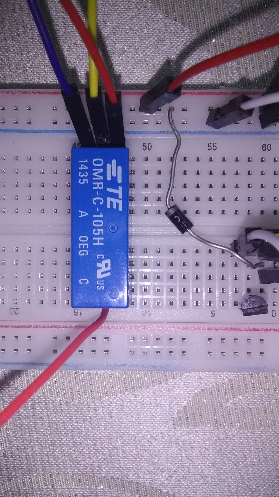
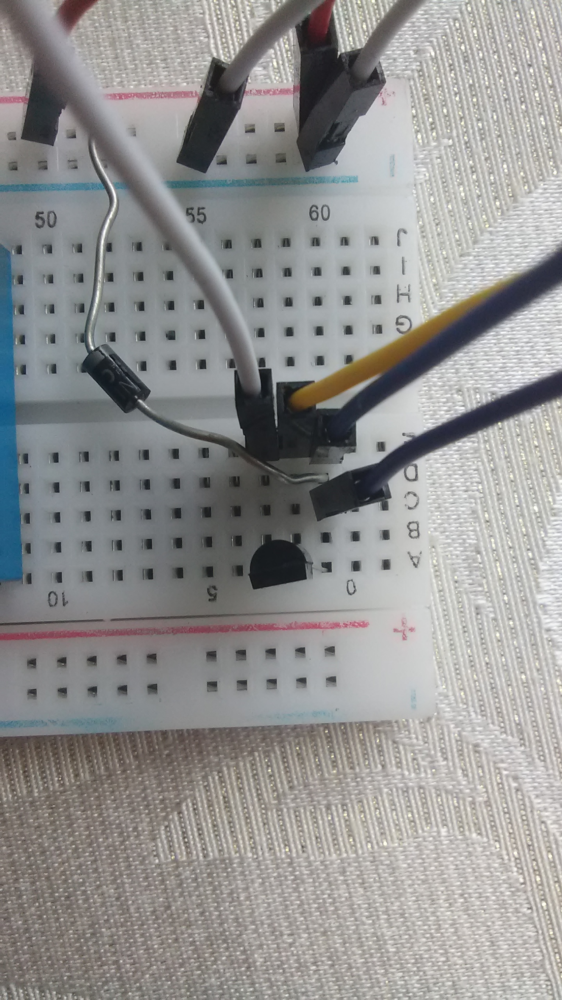
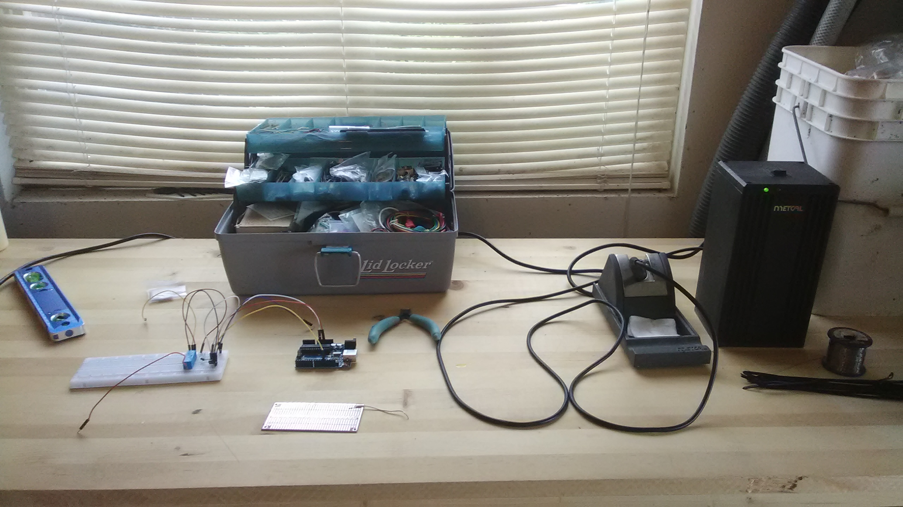

High altitude ballooning is a fun and educational activity, but there is always a risk of equiptment loss. Shifting winds in the jetstream and innaccuracies in the ammount of
helium in the balloon can cause the unit to drift further than expected, sometimes for hundereds of miles. Such shifts can make recovery impossible, either by drifting so far that
the balloon would require too great an investment in time to recover, or by depositing the balloon in terrain that is not navigible. To solve this problem, I have developed an affordible,
Arduino based device to cut down the balloon if it strays too far from home. I used a previous project from Bovine Aerospace as a template,
but I changed the code to meet my needs.
The above image shows the schematics for the cutdown circuit provided by Bovine Aerospace. The program running on the Arduino triggers a signal on pin 12, which then activates the transistor.
The transistor then sends a 5v pulse to the relay, pulling from the Arduino's 5v rail instead of from pin 12. This prevents accidently drawing more current than the Arduino can provide, since
the digital output pins have a lower current rating than the designated power rails. The relay then completes the cut down circuit, sending a 9v pulse through a nichrome wire to
melt through the balloon line. Because of the local environment, my instructor and I chose to use a one time use clip containing a nichrome filliment instead of bare wire like Bovine used.
Where I live there are a lot of fields containing dry grass that are quite flammable, even in the spring. The one time use clips destroy themselves after cutting through the line, then sever
the nichrome wire. This prevents the wire from landing in a field while hot; possibly starting a grass fire. The circuit works well, but the Arduino can exhibit unexpected behavior while the cut down is in progress.
After consultation with an electrical engineer, he reccomended that I separate the ground planes for the arduino and the cut down circuit.
After finding a sample project that looked promising, the first step was prototyping. Using a breadboard I wired the transistor and relay. I temporarily ignored the cut down circuit and waited until after the relay and
transistor were working as expected. The pictures below show the layout that I used.



This isn't the most space efficient way of setting this circuit up, but I didn't feel the need to perfect the layout in the prototyping stage.
Then came the fun part - soldering. Once the prototype was functional on the breadboard, I set up my workstation and got to work. Since I used perfboard that had the same trace pattern as a breadboard, I simply copied the
prototype layout to the perfboard. I did make an effort to condense the design though, and the switching components are confined to their own area of the board. The footprint could still be reduced further, but I wanted space
to tape batteries and other components. This makes it easier on launch day because the entire circuit and battery system is self-contained and mounted on its own backboard. For me this process was uneventful, but watch out for
solder bridges if using the breadboard style perfboard. It is very easy to accidently connect traces on the board with solder blobs that are too large.
After testing and making sure that the hardware functioned as intended, the next hurdle to surmount was the code. Bovine provided a wonderful template, but unfortunately his system only used altitude to determine when to cut
down the balloon. That wasn't terribly helpful for my needs, since I wanted to constrain the balloon to a particular geographic area. Because of the pressure differential between the helium inside the balloon and the air outside,
the balloon will destroy itself once it gets too high anyway. The final sketch that I produced is located here. Please note that the sketch
does not currently exhibit the desired behavior and is not usable in its current form.
The code simply pulls position data from the GPS module, in this case the Adafruit Ultimate GPS, and then compares it to end points defined
in the program. These points are contained in the if statements at the bottom of the code.
It is important to note that the code uses Decimal Degrees, not Degree, minutes seconds for coordinates. When using this code you need to first convert your desired endpoints to decimal degrees. My preferred calculator is found
here.
Despite how things may appear, you cannot simply concatenate the minutes and seconds and place them behind the degrees followed by a decimal point. This will result in a variance of +/- 30 miles in your cutdown location -
somewhat less than ideal. As long as the coordinates are converted correctly, you can expect to see accuracies of +/- 2 to 3 meters. This is what I experienced during testing and is more than accurate enough for a weather balloon.
At this point, everything was assembled and was ready to be integrated into the payload. Since it is quite cold at 35,000 meters, I needed some way of ensuring thermal stability at altitude. The batteries will rapidly loose
their charge when they are cold and the Arduino is only rated to function down to -40 degreees Celsius. Since the average temperature at 35,000 meters is -50 degres Celsius, we have a small problem. In the future a 3d printed,
weatherproof enclosure will be developed, but due to time constraints the enclosure will not be ready for this launch. Due to these constraints, I chose closed cell foam as my alternative material. Conveniently my teacher happened
to have an adequately sized box already formed, I just had to do a little bit of surgery to shorten the box so that it fit in the payload. The current enclosure has space for the cut down board, the Arduino, the GPS module, and 2 9v
batteries. On the lid, the payload team secured the flight computer and the SPOT survival GPS tracker that we use to find the balloon after it has landed. Even though the case isn't as convenient as the 3d printed unit will be, all
of the avionics are secured to a singlular, easily removable package. Since the case is made of foam, it should have enough insulation to keep the internal temperature from dropping to truly concerning levels.